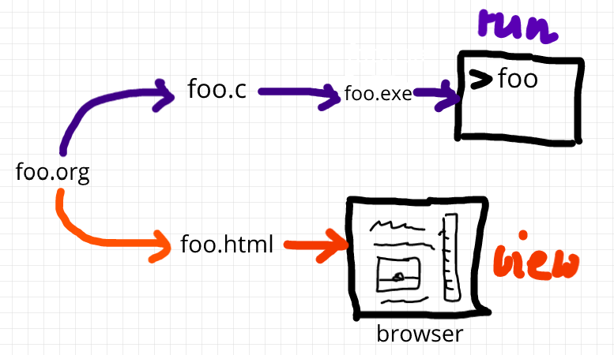

Course Introduction Practice Assignment: First Literate C Program
Introduction to Programming - Spring 2023 - Lyon College
Practice: first "literate" C program!
- Here are these instructions on GitHub: http://tinyurl.com/helloEmacs
- and a YouTube video (30 min): http://tinyurl.com/firstlitprog
Let's set Emacs up, write and run a first "literate" C program! it is very important that you enter everything exactly as shown. if you get something wrong just go back one step. Contact me if you need me after checking with your neighbor if he or she can help.
- Open the command line terminal with
cmdin the search field - At the prompt, type:
gcc --version - At the prompt, type:
emacs --version - If Emacs is available, enter:
emacs -q - Enter:
ALT + x ewwto open a browser inside Emacs. - At the prompt, enter:
tinyurl.com/EmacsLyon - Save the downloaded file with
CTRL + x CTRL + was~/.emacs - Kill the current
*EWW*buffer withC-x k - Shut Emacs down with
C-x C-c. - Restart Emacs. The file you just created,
.emacs, is now loaded. - Create a new file:
C-x C-f- at the prompt, enter~/firstLit.org. Enter the following text (replace
yournamewith your own name):#+TITLE: First Literate C Program #+AUTHOR: [yourname] (pledged) * My first literate C program This C program runs inside an Emacs Org-mode code block: #+begin_src C :results output :tangle first.c #include <stdio.h> int main() { printf("Hello, Emacs!\n"); return 0; } #+end_src- 'Run' the program by putting the cursor anywhere on the code block
and typing
CTRL-c CTRL-c. You should see the result on the screen. - This is your first C program! Save the file with
CTRL + x CTRL + s(in the minibuffer, you will seeC-x C-s). - 'Tangle' the code with
CTRL + c CTRL + v t(or, alternatively, withALT + x org-babel-tangle RET): Emacs reports"Tangled 1 code block from first.org"in the minibuffer. 'Weave' the document from the literate file with
C-c C-efollowed byhoto open the document as HTML in a browser.
Figure 1: What happens when you tangle or weave a literate program
- Open a shell inside Emacs by entering:
ALT-x eshell - At the
$prompt, enterls -l first*- you should seefirst.clisted - Display
first.cby enteringcat first.c - Enter
gcc first.c -o helloto compile the C program into an executable - Enter
helloto run the executable. You should see the output. - Exit and close Emacs with
CTRL-x CTRL-c - Exit and close the shell by entering
exitafter the prompt - Save your file to a directory on your GDrive (you can do this from GDrive in a browser, with the File Explorer.
- Upload
first.orgas your first 'literate' in-class assignment:- Open a browser to GDrive and upload the file
- Open the assignment in Canvas at lyon.instructure.com
- Upload the file from GDrive (click on "
More") - When you see it attached, click on
Submit Assignment.
What did you just learn?
You learnt:
- How to open and close the GNU Emacs editor.
- How to create, save, and write an Emacs Org-mode file.
- How to create, compile, and run a C program inside Emacs.
- How to tangle a literate program into source code.
- How to save a file on your GDrive in three ways.
- How to submit a completed assignment to Canvas.
It would be worth repeating these steps on your own without peeking in your notes to make sure that you understood what you did and that you can do it again - we'll do this hundreds of times in class!
You can watch me complete this exercise in this video (30').